SEC Schedule
The above chart should provide enough details about schedules and team results during the non-conference schedule. Let’s take a look at the pace of the SEC.
Pace
Let’s see what pace tell us about the SEC. Here is a look at the points per possession and defensive points per possession. There is no true dominant team on both sides of the ball. It looks as though the SEC will truly be a toss-up this year.
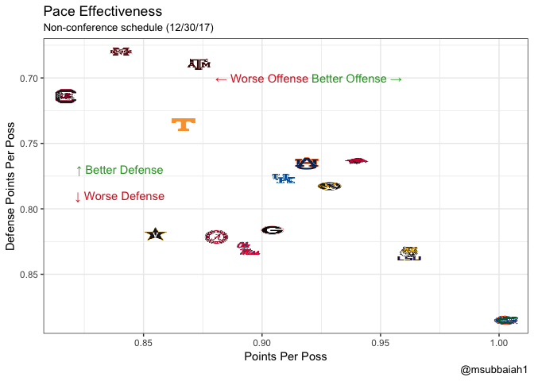
Even though no one stands out at the end of non-conference play that could be a result of various factors from injuries, suspensions, type of opponents faced, etc. It’ll definitely evolve as we move on through the season. Now let’s check out how teams are shooting!
Shooting
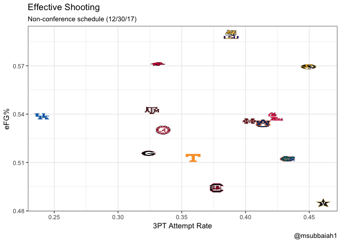
I’m a bit surprised at Kentucky’s low 3 point attempt rate to start the season. Definitely some concern for South Carolina and Vandy as they struggled to shoot (eFG below 50%) in non-conference play.
Usage Rate
Collin Sexton is a unique talent, and it definitely can be seen here. His usage rate doesn’t seem to dip with more minutes. Additionally, one of the many freshman (TJ Starks) on the Aggie roster is making the most of his limited playing time. Note I’ve filtered out players who played less than 40 minutes.
Go ahead and look through for your team’s players.
Let’s dig a little bit deeper and take a look at each individual team. Let’s look at where the Offense come from?
I’ve been working on developing assist maps for a while now, but would like to give a shout out to the Yale Sports Group. These assist maps were based of theirs.
Just a few quick takeaways:
* Sexton ranks 3rd for weighted assists on Alabama, was thinking he’d be higher.
* Florida’s offense unsurprisingly runs through Chiozza
* MSU’s offense seems dependent on Weatherspoon (Guess he’s good? I don’t watch much MSU)
Alabama
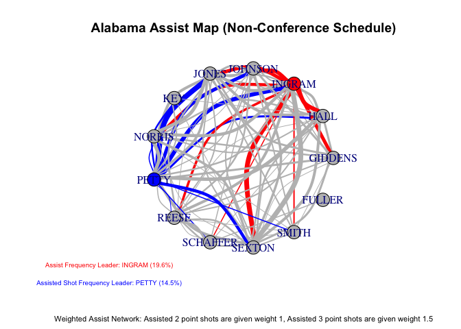
Arkansas
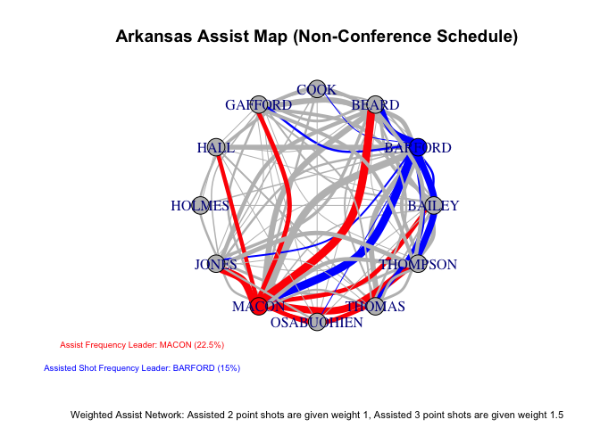
Auburn
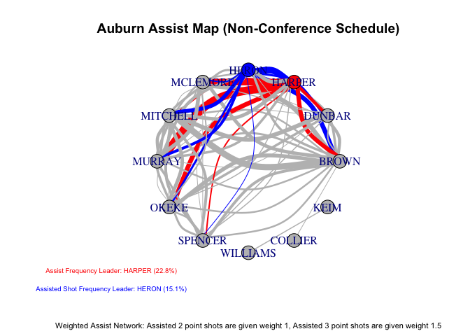
Florida
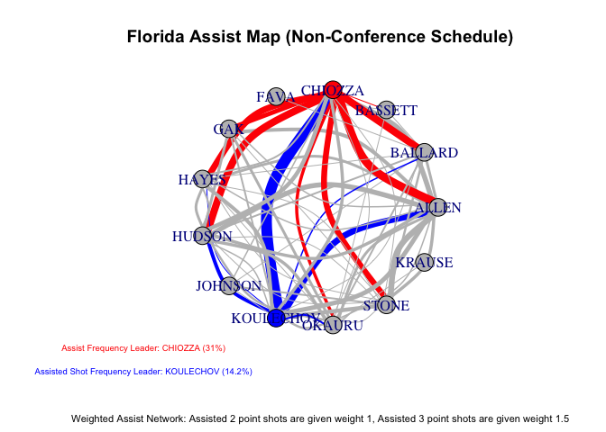
Georgia
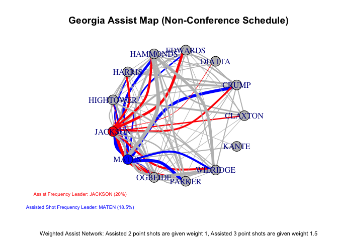
Kentucky
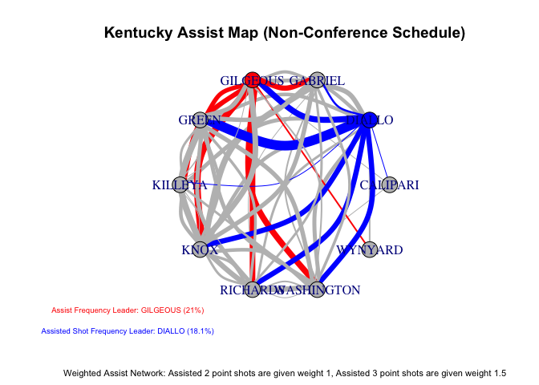
LSU
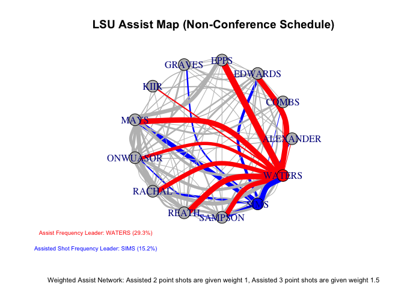
Mississippi State
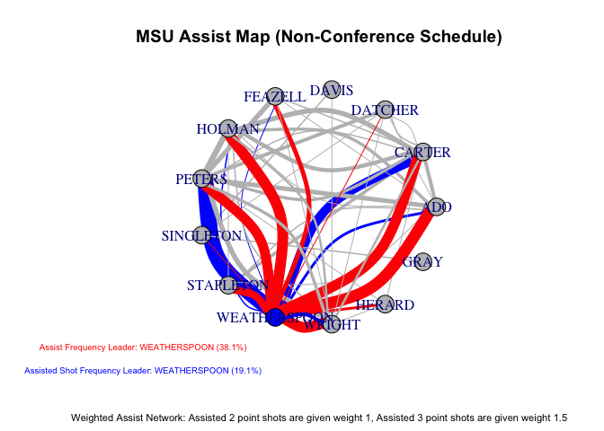
Missouri
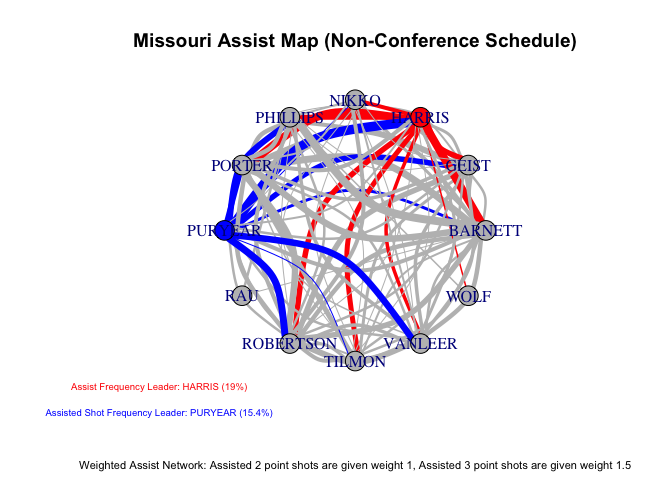
Ole Miss
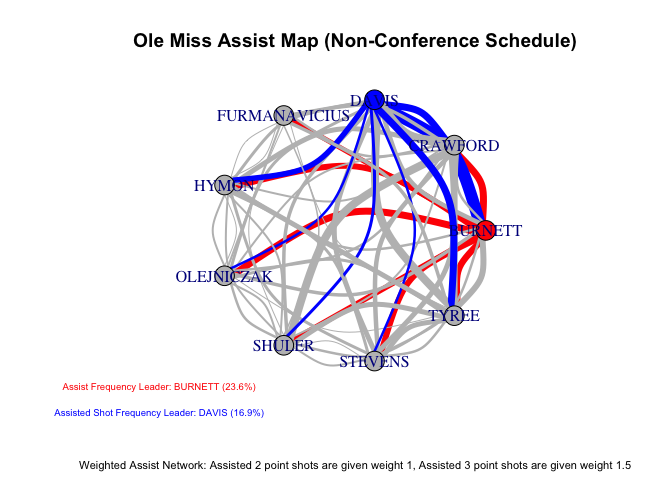
South Carolina
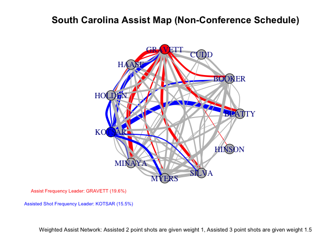
Tennessee
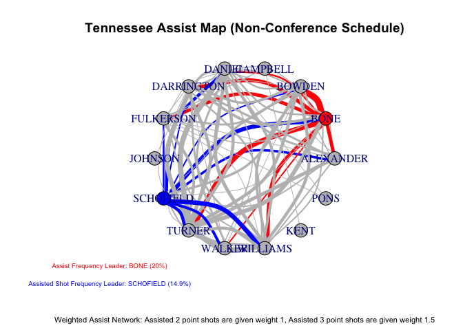
Texas A&M
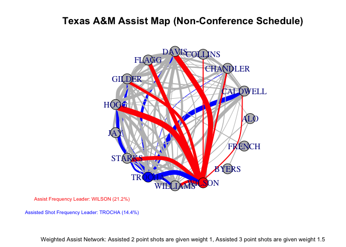
Vanderbilt
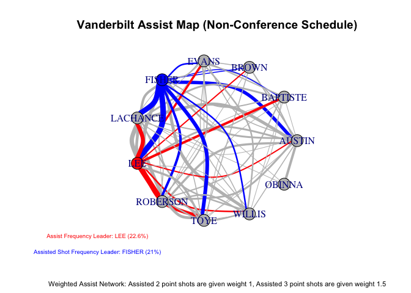